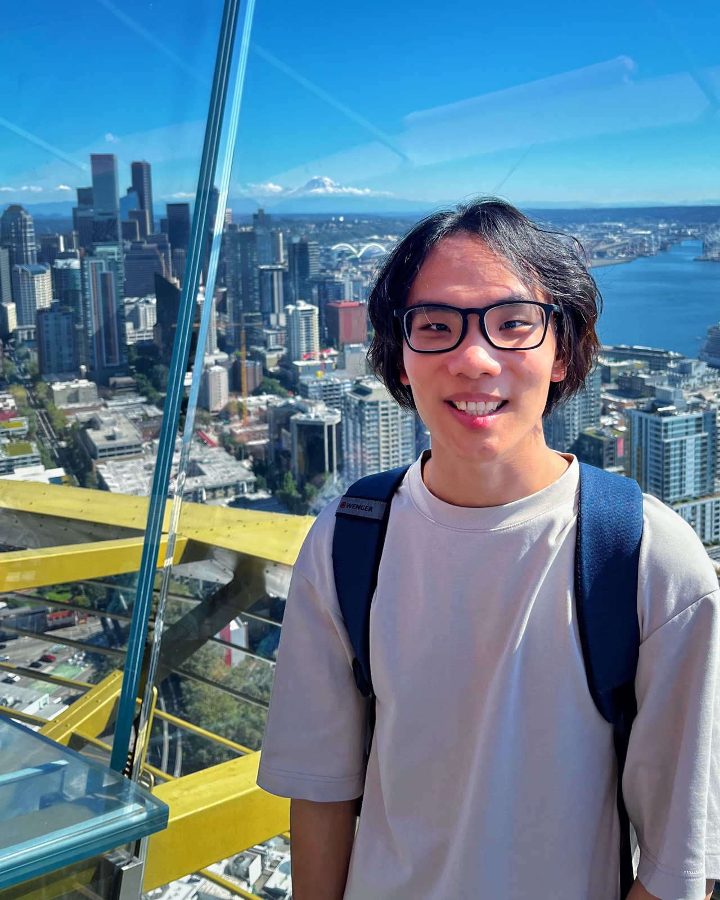

Zixuan Dong董子轩
About
I am a Ph.D. student in Computer Science at NYU Courant, advised by Prof. Keith Ross. My research interests span the theory and application of reinforcement learning (RL) and deep learning, with a primary focus on improving the sample efficiency and representation learning of deep RL algorithms for robotic control. Prior to my Ph.D., I earned a B.Sc. in Honors Mathematics and Data Science with a concentration in AI from NYU Shanghai. Outside of research, I am a Kendo practitioner.
Research interests

News
2026
- Our new work PolicyIK is now available on arXiv. It was exciting to get hands-on experience training RL directly on a real OpenArm to learn its inverse kinematics!
- Our paper Geometric Analysis of Neural Regression Collapse has been accepted to NeurIPS 2026. See you on the beach in Sydney!
- Presented our work Minimal Reward Ingredients at RLC 2026 in Montréal. Very fortunate to receive the Outstanding Paper Award for Scientific Understanding in Reinforcement Learning!
- Attended ICML 2026 in Seoul as a Gold Reviewer.
- Our work Minimal Reward Ingredients has been accepted to RLC 2026.
Selected Work
-
PolicyIK: High-Precision Inverse Kinematics for Robot Arms with Reinforcement Learning
Yuhan Liu*, Xinqi Liu*, Zixuan Dong*, Keith Ross, Shenji Wan
arXiv preprint arXiv:2611.05372, 2026
-
Geometric Analysis of Neural Regression Collapse via Intrinsic Dimension
Zixuan Dong*, Bimarsha Adhikari*, George Andriopoulos*, Keith Ross
Conference on Neural Information Processing Systems (NeurIPS), 2026
-
Minimal Ingredients for Reward Assignment from Expert Demonstrations
Zixuan Dong*, Yumi Omori*, Keith Ross
Reinforcement Learning Conference (RLC), 2026
-
Cross Entropy versus Label Smoothing: A Neural Collapse Perspective
Li Guo, George Andriopoulos, Zifan Zhao, Zixuan Dong, Shuyang Ling, Keith Ross
Transactions on Machine Learning Research (TMLR), 2025
-
The Prevalence of Neural Collapse in Neural Multivariate Regression
George Andriopoulos*, Zixuan Dong*, Li Guo*, Zifan Zhao*, Keith Ross*
Conference on Neural Information Processing Systems (NeurIPS), 2024
-
Pre-training with Synthetic Data Helps Offline Reinforcement Learning
Zecheng Wang*, Che Wang*, Zixuan Dong*, Keith Ross
International Conference on Learning Representations (ICLR), 2024
* Equal contribution.
Teaching
- Laboratory Leader, Introduction to Computer Programming (CSCI-SHU 11)NYU ShanghaiFall 2024
- Guest Lecturer, Advanced Topics in AI and Machine Learning (CS-UH 3212)NYU Abu Dhabi · Lectures on imitation learning and offline RLSpring 2024, 2025
Service
- Reviewer, ICML 2026Gold Reviewer Award
- Reviewer, NeurIPS 2025, 2026 · ICLR 2026, 2027 · ICRA 2026
- Journal reviewer, Expert Systems with Applications, 2026